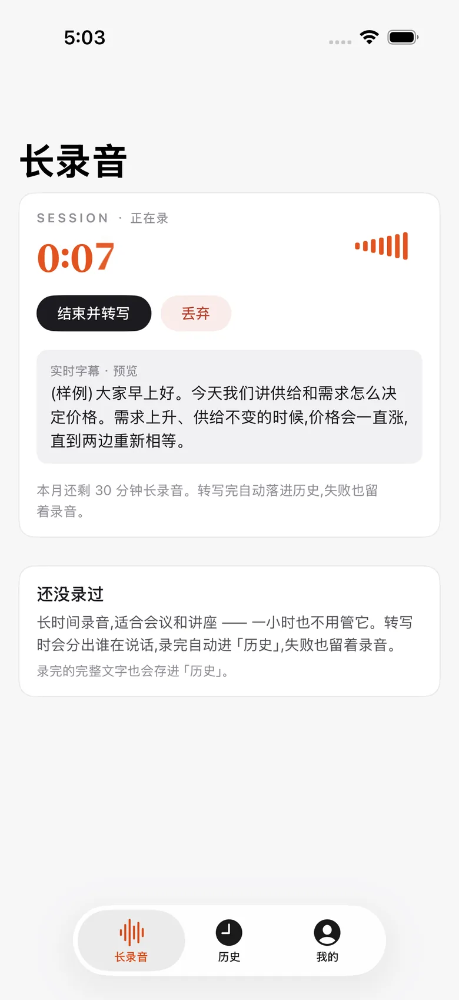
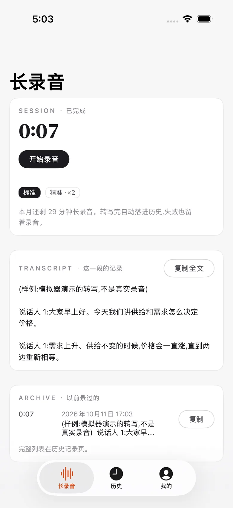
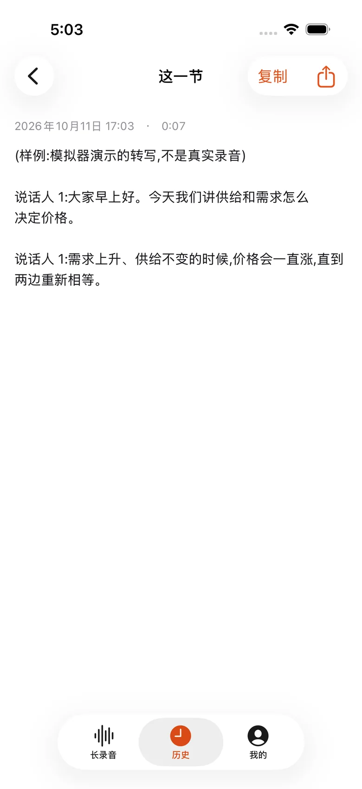
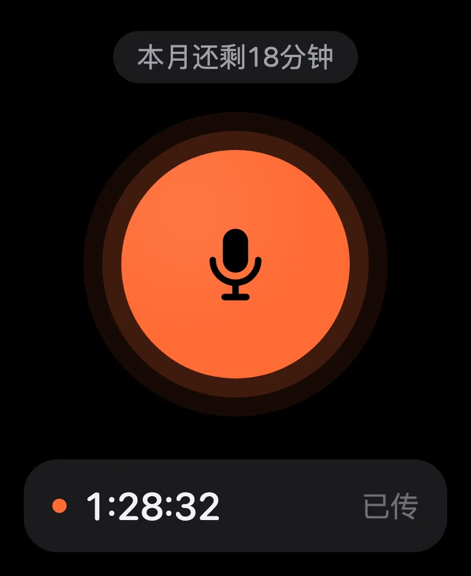
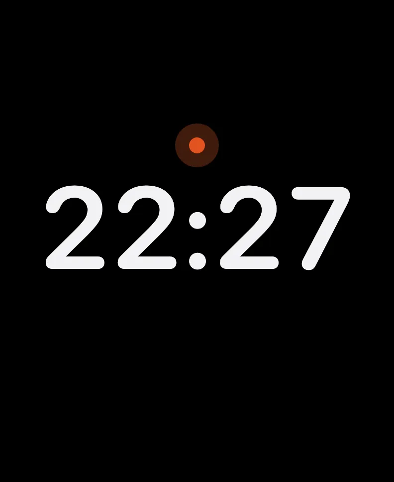
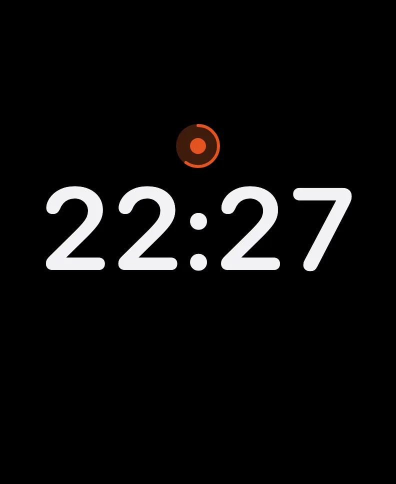
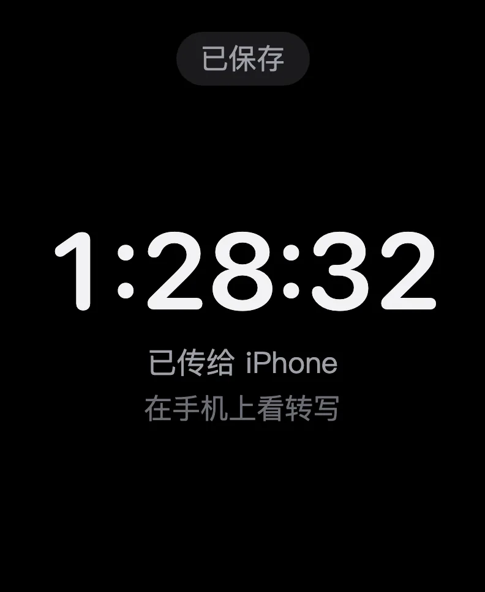
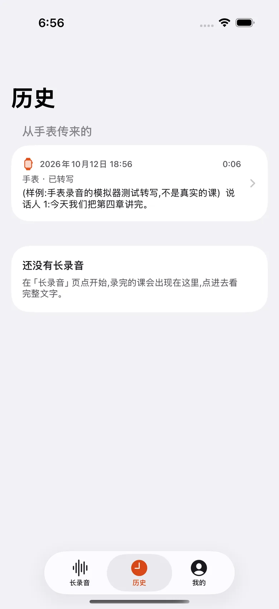
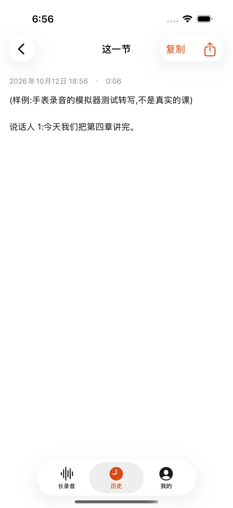

iPhone
开着就录
01
一小时不用管开始长录音,手机放一边,一小时不用管。
02
一句句出字录的时候一句句出字,先看个大概。完整的在录完。
03
分出谁在说录完,完整转写进历史,分出谁在说。失败也留着录音。
登录后免费试录,累计 3 分钟。想多录,看会员订阅 →

正在录,一句句出字

录完,完整转写

历史里,分出谁在说
Apple Watch
抬腕一点
01
点一下开始手表上点一下就开始录,熄屏接着录。
02
长按停止想停的时候,长按一下。
03
自动传到手机录音先存在手表上,到手机附近自动传过去,手机转写。
手机登录后,手表自动登录,同一个账号。

点一下开始

录音中

长按停止

已传给手机
手表录的,手机上看
手表录的,到手机附近自动传过去。转写好的那一节在手机的历史里,点开看全文。

历史里,从手表传来的

点开,看全文
录音在你手里
录音和历史,存在你自己的设备上。
出了错,录音还在:转写失败,也留着录音。
iPhone 和 Apple Watch 版本即将推出。现在先用 Mac 版,同一个账号。